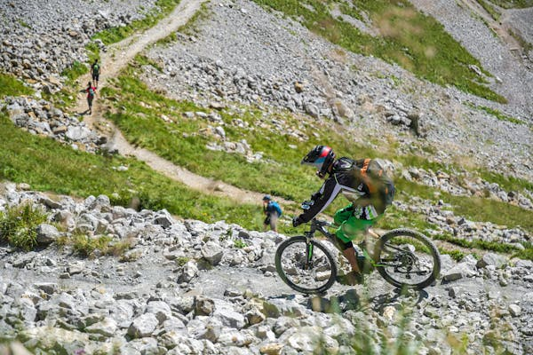
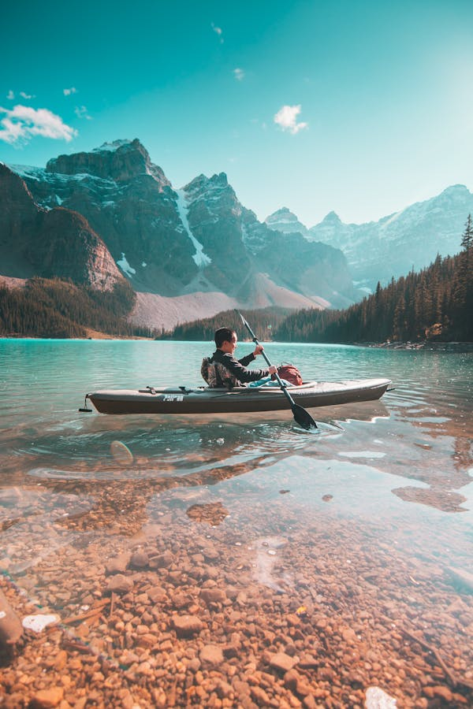

Whether high altitude trails, river walks or family trails: In Switzerland you can find hiking trails of all kinds and for every level.

Challenging single trails, impressive mountain bike tours or bike tours lasting several days. Switzerland has it all. It is a paradise for adventure on a bike or mountain bike.

Switzerland, the land of lakes and rivers. There is no shortage of water sports. Whether rafting, canoeing, stand-up paddling, kayaking or sailing: It's all possible.